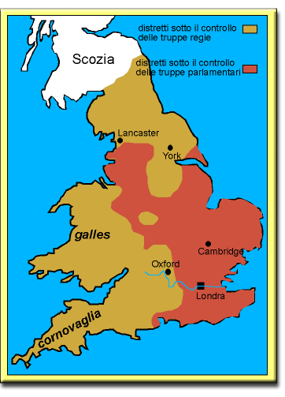

pag. 2/5> I rivoluzione Petizione Putney Processo
La carta mostra le regioni schierate con il Re e quelle schierate con il Parlamento.

Le regioni con un'economia più dinamica e mercantile (Londra e le province sudorientali) si schierarono in genere con il Parlamento, quelle con economia più arretrata (Galles, Cornovaglia, Devon, Northumberland) con il Re.
Schieramento delle forze sociali (lo schema è solo indicativo, parte delle ricche oligarchie mercantili si mantennero neutrali o passarono dalla parte del Re, anche la gentry fu divisa, molti appartenenti alla gentry ricca furono attivi soprattutto nelle fasi iniziali, mentre i leader radicali della fine degli anni '40 apparenevano alla gentry minore; nelle campagne braccianti agricoli e piccoli affittuari furono passivi, mentre i piccoli proprietari si schierarono decisamente con il Parlamento)
| A favore del Re | A favore del Parlamento |
|---|---|
| Lords | Ceti commerciali e manifatturieri |
| Chiesa anglicana | Gentry |
| Parte della popolazione rurale | Yeomen |
| Detentori dei monopoli commerciali | Artigiani, piccoli lavoratori |
I seguaci del Re erano chiamati "Cavalieri", mentre i seguaci del Parlamento "Teste rotonde".
Inizialmente il re che disponeva di un migliore esercito (i nobili erano i professionisti della guerra) e impiegava anche truppe mercenarie ebbe la meglio sull'esercito del Parlamento. Ma dopo la riforma dell'esercito (New Model Army) operato da Oliver Cromwell, il Parlamento ottenne la vittoria di Naseby (1645).
Dopo la vittoria sul Re, vennero alla luce divisioni tra i puritani: la maggioranza parlamentare era presbiteriana, voleva smantellare la Chiesa anglicana e introdurre un'unica confessione di Stato calvinista presbiteriana, cioè governata in modo autonomo dalle singole comunità di fedeli. L'esercito si riconosceva invece negli Indipendenti che volevano una generalizzata libertà di culto e di organizzazione per tutte le forze protestanti. Nell'esercito, però, tra la truppa, in contrapposizione agli ufficiali, si diffondevano anche tendenze democratiche e antigerarchiche di cui furono espressione i Livellatori, favorevoli alla uguaglianza politica e al suffragio universale, alll'abolizione della monarchia e alla fondazione della repubblica. Un altro gruppo, quello degli Zappatori, reclamava l'uguaglianza economica e l'abolizione della proprietà privata. Gli Zappatori erano portavoce del grave malcontento seguito alla diffusione delle recinzioni. Sorse anche il gruppo religioso dei quacqueri, pacifisti e contrari ad ogni forma di organizzazione e autorità religiosa.
Il contrasto all'interno dell'esercito si manifestò nell'autunno del 1647 quando a Putney, presso Londra, i livellatori presentarono un documento detto Patto del popolo, che fu poi discusso da un'assemblea formata dai membri dell'esercito e dai cittadini. Il fuoco del dibattito fu il primo articolo del Patto del popolo che introduceva il suffragio universale.
Se vuoi leggere il testo del dibattito di Putney, clicca PUTNEY.
Il Re, approfittando delle divisioni del Parlamento e dell'esrcito, riparò in Scozia e riprese la guerra. Cromwell sconfisse il Re, poi marciò sul Parlamento epurandolo degli elementi moderati (Rump Parliament). Il Parlamento processò e condannò a morte il Re (1649). Fu abolita la Camera dei Lords e proclamata la repubblica (Commonwealth).
Se vuoi leggere i verbali del processo al Re, clicca PROCESSO.
Subito dopo, Cromwell represse il dissenso dei Livellatori e degli Zappatori. Represse anche le ribellioni scozzesi e irlandesi. In politica estera, per motivi commerciali, fece una guerra vittoriosa contro l'Olanda. L'Atto di navigazione del 1651, infatti, aveva stabilito che nei porti inglesi potessero approdare solo navi inglesi o dei paesi produttori, tagliando fuori gli olandesi che avevano una posizione dominante nel commercio internazionale e aveva affermato il monopolio dei traffici con le colonie inglesi.
Nel 1653 Cromwell sciolse il Rump Parliament per la sua opposizione, si proclamò Lord Protettore di Inghilterra e promulgò una costituzione in base alla quale il Parlamento era eletto a suffragio ristretto. Il suo governo ebbe sempre più il carattere di una dittatura militare e alla sua morte (1658), dopo un periodo di disordini, fu ricostituito il Lungo Parlamento (1660) il quale richiamò l'erede del defunto sovrano, che assunse il trono con il nome di Carlo II.